1. Introducción
El sistema de consultorio médico es una aplicación diseñada para gestionar pacientes, turnos, fichas médicas, facturación y usuarios de forma centralizada.
Este manual está pensado para guiar paso a paso al usuario en cada módulo, explicando sus funciones y el flujo de trabajo.
- Lenguaje: Python 3 + Tkinter
- Base de datos: MySQL
- Requiere librerías: mysql.connector
2. Pantalla de Inicio de Sesión
Al ejecutar la aplicación, se mostrará una ventana de inicio de sesión donde se debe ingresar el usuario y contraseña registrados.
El acceso está restringido por roles: Administrador, Cardiólogo o Secretaria.
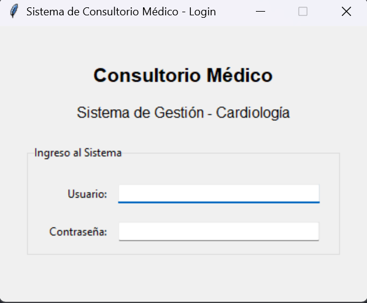3. Ventana Principal
Una vez iniciado sesión, se muestra la interfaz principal con pestañas para acceder a los diferentes módulos.
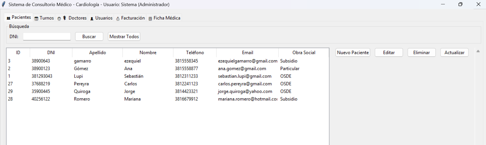4. Módulo Pacientes 👥
Permite registrar, modificar, eliminar y buscar pacientes. Incluye campos como DNI, nombre, apellido, teléfono, email, dirección y obra social.
- Nuevo: crea un paciente nuevo.
- Editar: abre el formulario del paciente seleccionado.
- Eliminar: borra el registro (si no tiene turnos activos).
5. Módulo Turnos 📅
En este módulo se pueden crear, modificar o cancelar turnos. Permite filtrar por fecha o ver próximos turnos.
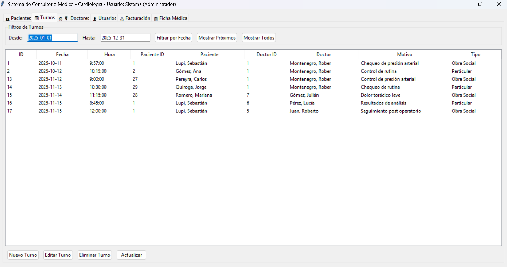6. Módulo Ficha Médica 📋
La ficha médica contiene tres secciones: Consultas Médicas, Recetas Médicas y Estudios Médicos. Cada ficha está asociada a un paciente.
Desde aquí, el médico puede registrar diagnósticos, tratamientos y resultados de estudios.
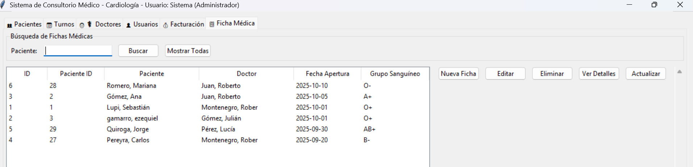 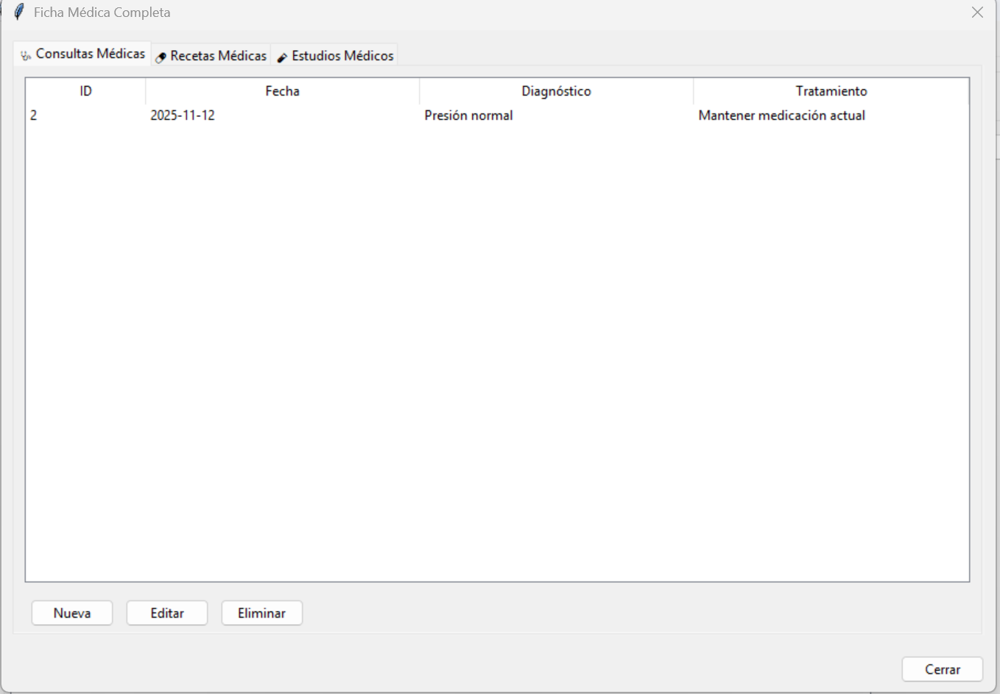 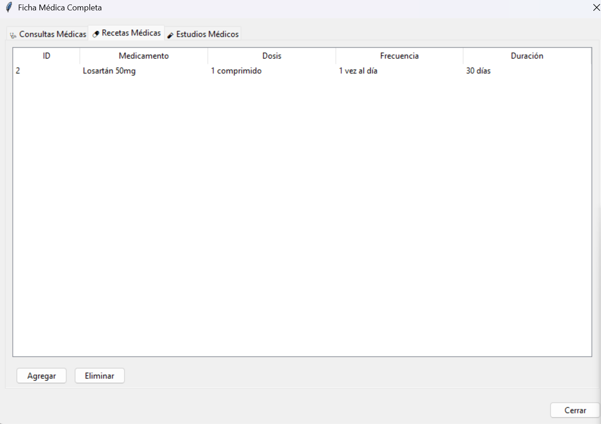 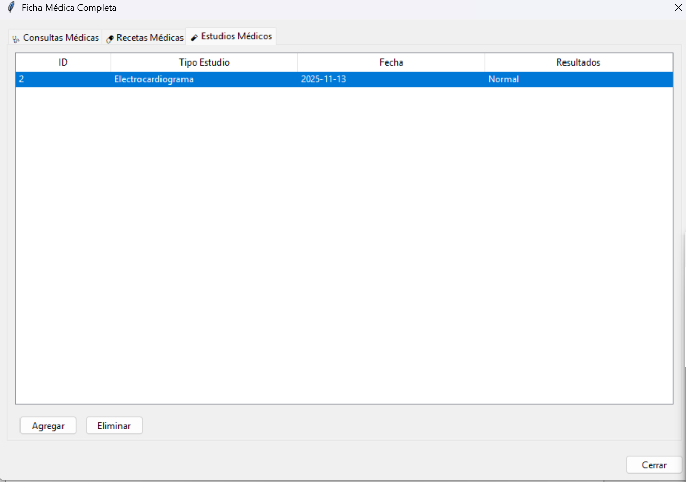7. Módulo Facturación 💰
Permite emitir, editar o eliminar facturas relacionadas con turnos. Se puede marcar una factura como pagada.
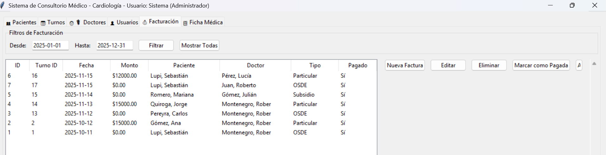 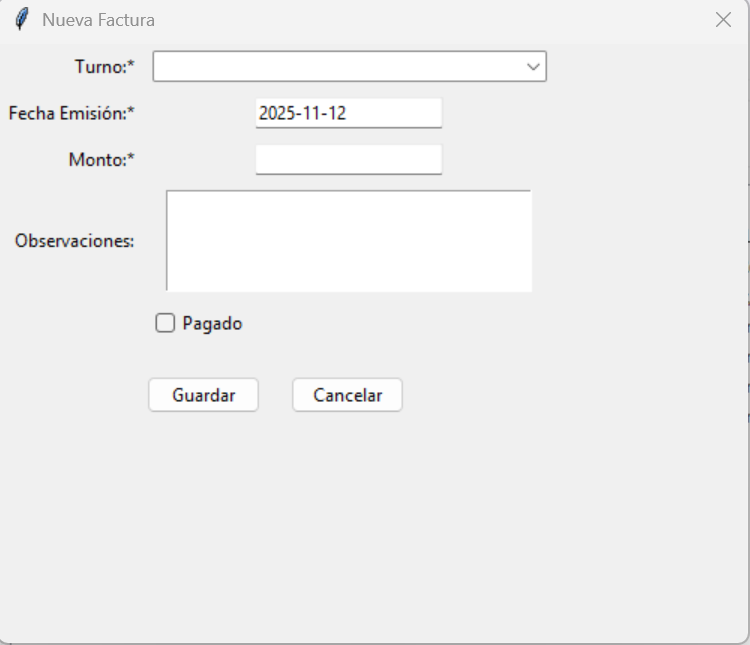8. Módulo Usuarios 👤
Desde aquí el administrador puede crear nuevos usuarios, asignar roles y vincular doctores.
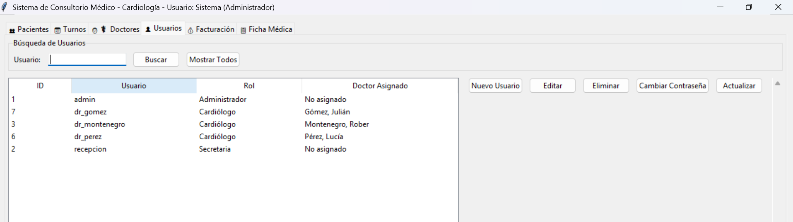 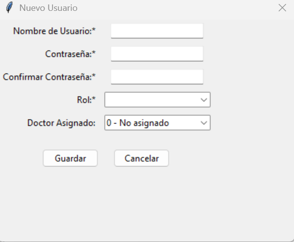 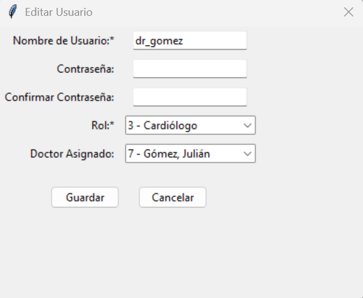 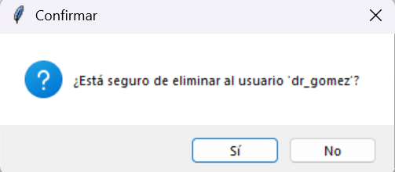 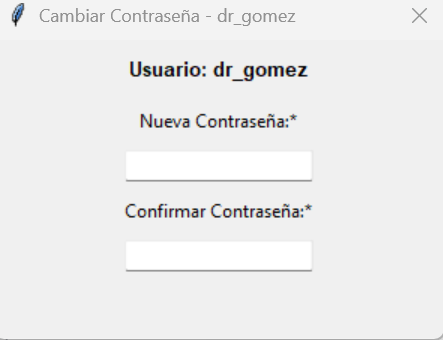9. Módulo Doctores 👨⚕️
Permite registrar los doctores disponibles en el consultorio y asignarles sus especialidades.
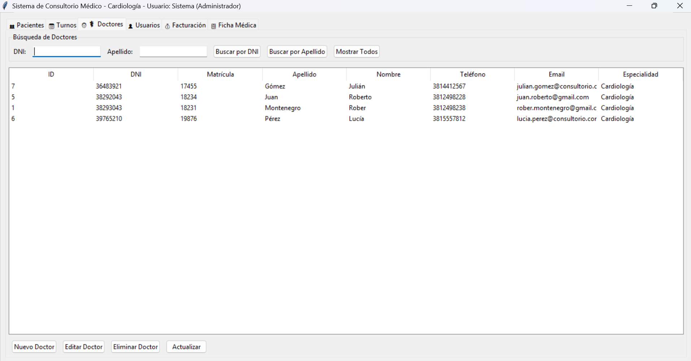10. Errores Comunes
- Error de conexión: verificar MySQL y credenciales en
database/connection.py. - Base de datos vacía: importar el script SQL de estructura.
- Error en login: revisar usuarios en la tabla
Usuario.
11. Créditos
Alumno: Gamarro Claudio Ezequiel
Alumno: Diaz Emilse
Alumno: Montenegro Rober
Materia: Taller de Programación
Profesor: Acuña Arias Carla
Instituto: IES Alfredo Coviello
Año: 2025